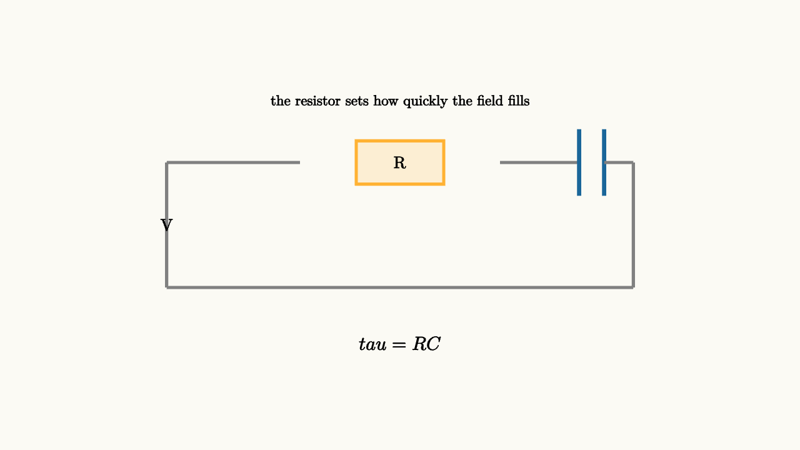

RC Circuits Turn Time Into An Exponential
A bare capacitor stores field energy. A resistor controls how quickly charge can be moved into or out of that field. Put them together and you get one of the most important time patterns in physics and engineering: exponential approach.
Consider a resistor $R$ connected to a capacitor $C$ and a battery of voltage $V_0$. At the first moment after the switch closes, the capacitor is uncharged, so its voltage is zero. The resistor sees nearly the full battery voltage, and the current is large. As the capacitor charges, its voltage rises. The resistor sees less voltage, so the current falls.
The motion slows as it gets closer to the destination.

source
background = [0.985, 0.98, 0.955, 1]
camera = Camera(4.8b)
mesh circuit = block {
. stroke{GRAY, 3} Line(start: [-2.8, 0.75, 0], end: [-1.2, 0.75, 0])
. fill{alpha{0.17} ORANGE} stroke{ORANGE, 3} center{[0, 0.75, 0]} Rect([1.05, 0.52])
. center{[0, 0.75, 0]} Text("R", 0.72)
. stroke{GRAY, 3} Line(start: [1.2, 0.75, 0], end: [2.15, 0.75, 0])
. stroke{BLUE, 4} Line(start: [2.15, 1.15, 0], end: [2.15, 0.35, 0])
. stroke{BLUE, 4} Line(start: [2.45, 1.15, 0], end: [2.45, 0.35, 0])
. stroke{GRAY, 3} Line(start: [2.45, 0.75, 0], end: [2.8, 0.75, 0])
. stroke{GRAY, 3} Line(start: [2.8, 0.75, 0], end: [2.8, -0.75, 0])
. stroke{GRAY, 3} Line(start: [2.8, -0.75, 0], end: [-2.8, -0.75, 0])
. stroke{GRAY, 3} Line(start: [-2.8, -0.75, 0], end: [-2.8, 0.75, 0])
. center{[-2.8, 0, 0]} Text("V", 0.72)
. center{[0, -1.42, 0]} Tex("\\tau = RC", 0.82)
. center{[0, 1.48, 0]} Text("the resistor sets how quickly the field fills", 0.62)
}
"rc circuit"
play Fade(0.7)The capacitor voltage during charging is
The current is
The product $RC$ has units of seconds, and it is called the time constant:
After one time constant, the capacitor has reached about $63\%$ of the way from its starting voltage to its final voltage. After two, about $86\%$. After five, it is close enough to the final value for many practical purposes.
The differential equation is a balance
The equation behind the charging curve comes from Kirchhoff's voltage law. Around the loop,
The resistor voltage is $V_R=IR$. The capacitor current is related to its voltage by
Substitute these into the loop equation:
Rearranging,
This last line is the whole intuition. The rate of change is proportional to the remaining gap. When the capacitor is far from its destination, it changes quickly. When it is close, it changes slowly.
Discharging tells the same story
If a charged capacitor is connected across a resistor with no battery, the loop equation becomes
The voltage decays as
The same time constant appears because the same resistor limits the same charge rearrangement. Charging and discharging are mirror stories around different final voltages.
source
param level = 0.15
background = [0.985, 0.98, 0.955, 1]
camera = Camera(4.8b)
let Plot = |level| block {
. stroke{GRAY, 2} Line(start: [-2.8, -1.0, 0], end: [2.7, -1.0, 0])
. stroke{GRAY, 2} Line(start: [-2.8, -1.0, 0], end: [-2.8, 1.15, 0])
. stroke{BLUE, 3} ExplicitFunc(|x| -1.0 + 2.05 * (1 - exp(-1.15 * (x + 2.8))), [-2.8, 2.5, 120])
. fill{ORANGE} center{[-2.8 + 5.1 * level, -1.0 + 2.05 * (1 - exp(-1.15 * 5.1 * level)), 0]} Circle(0.09)
. stroke{ORANGE, 2} Line(start: [-2.8 + 5.1 * level, -1.0, 0], end: [-2.8 + 5.1 * level, -1.0 + 2.05 * (1 - exp(-1.15 * 5.1 * level)), 0])
. center{[0, 1.55, 0]} Text("exponential approach slows near the target", 0.62)
. center{[0, -1.55, 0]} Tex("V_C(t)=V_0(1-e^{-t/RC})", 0.60)
}
"start charging"
mesh graph = Plot(level: $level)
play Fade(0.6)
"approach"
level = 0.82
graph = Plot(level: $level)
play Lerp(1.4)This scene uses a parameter to expose the motion along the curve, while the slide animation carries the reader from early charging to late charging. The important object is the moving gap to the final voltage.
Why RC circuits matter
An RC circuit is a one-state memory. The capacitor voltage records something about the recent past, and the resistor determines how quickly that memory fades. That idea appears in camera flashes, touch sensors, audio filters, power-supply smoothing, biological membranes, and digital timing circuits.
For rapidly changing signals, a capacitor may look like a short path because its voltage cannot change instantly while current can flow. For slowly changing signals, it may look like an open path once it has charged. This is the doorway from basic circuits into filters and signal processing.
The lesson to keep
An RC circuit turns a static field-storage device into a time-dependent system. The voltage changes fastest when it is far from its destination, and the rate shrinks with the remaining gap. That feedback between state and rate produces the exponential.
Whenever you see $e^{-t/\tau}$, look for this pattern: the amount left to change controls how fast the change happens.